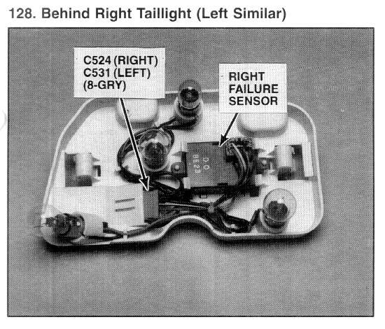

Operation CHARM
: Car repair manuals for everyone.
Home
>>
Acura
>>
1994
>>
Vigor L5-2451cc 2.5L SOHC G25A4 FI
>>
Repair and Diagnosis
>>
Instrument Panel, Gauges and Warning Indicators
>>
Lamp Out Indicator
>>
Lamp Out Sensor
>>
Locations
Lamp Out Sensor: Locations

Behind Right Taillight (Left Similar)